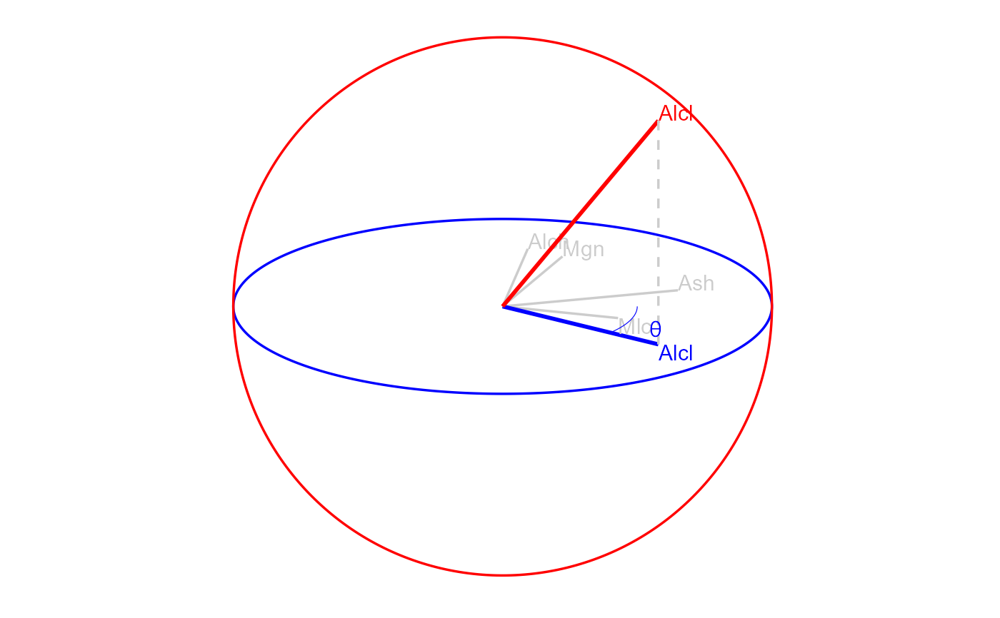
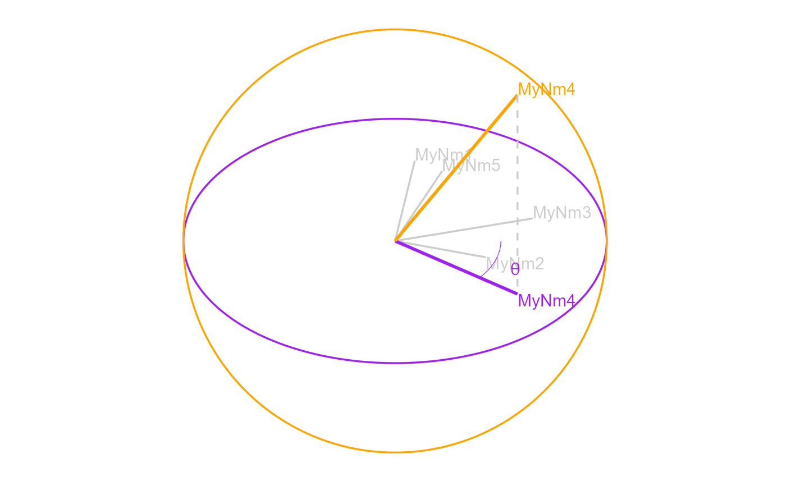

R/zDepricated_3_visualize.r
view_manip_space.RdUses base graphics to plot the circle with axes representing the projection frame. Returns the corresponding table. Only works for 2d manual tours.
view_manip_space(
basis,
manip_var,
tilt = 0.1 * pi,
basis_label = abbreviate(row.names(basis), 3),
manip_col = "blue",
manip_sp_col = "red",
line_size = 0.6,
text_size = 4
)A (p, d) orthonormal numeric matrix. The linear combination the original variables contribute to projection space. Required, no default.
Number of the column/dimension to rotate.
angle in radians to rotate the projection plane. Defaults to .1 * pi.
Optional, character vector of p length, add name to the axes
in the frame, defaults to 3 letter abbriviation of the orginal variable names.
String of the color to highlight the manip_var.
Color to illustrate the z direction, orthogonal to the projection plane.
The size of the lines of the unit circle and variable contributions of the basis. Defaults to 1.
The size of the text labels of the variable contributions of the basis. Defaults to 5.
ggplot object of the basis.
library(spinifex)
dat_std <- scale_sd(wine[, 2:6])
bas <- basis_pca(dat_std)
mv <- manip_var_of(bas)
view_manip_space(basis = bas, manip_var = mv)

view_manip_space(basis = bas, manip_var = mv,
tilt = 2/12 * pi, basis_label = paste0("MyNm", 1:ncol(dat_std)),
manip_col = "purple", manip_sp_col = "orange")
